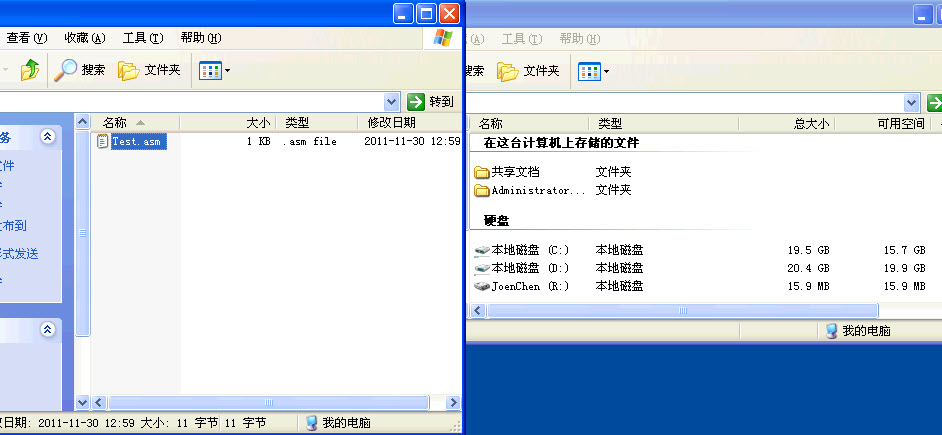

WDF虚拟磁盘驱动(RamDisk)
文章目录
这是寒江独钓里面第5章的例子了, 分析自DDK中的RamDisk驱动. 具体来说没有太大的用处, 只是对WDF驱动的套路有个了解吧, 但是这个WDF到现在为止明显没有形成气候. 写个驱动出来, 安装都是很麻烦的事情, 哪里有NT式驱动舒服啊, 不过WDF确实是潮流, 这个也确实不能够忽略..
其实要说NT式驱动能够在浏览器上面显示一个磁盘的话, 这个用Nt式驱动来做也很简单, 前面几章也就做了一个模拟磁盘读写的驱动. 这个驱动的难点是建立一个文件系统, 文件系统的话是比较棘手的一个东西, 这个驱动用的是简单的AT12/16.. 所以写完感觉还是意犹未尽啊!寒江独钓也就一个WDF的例子, 所以我从网上去DOWN了一个NT式驱动的虚拟磁盘的源码, 这两天再分析分析..
都说了这个驱动的难点就是建立文件系统, 其他基本上也没有什么难点, 所以最主要是要搞定FAT16的文件系统. 这个网上大把资料. 搞成FAT32也不是问题. 所以基本上没有什么好说的, 代码注释非常齐全了.
这边是截图和代码:
http://www.joenchen.com/JoenTools/ramdisk_wdf.rar

这边是驱动的头文件:
/* Windows 内核下最简单的虚拟磁盘驱动, 将所有的读写请求转到内存中 WDF驱动, 修改自MicroSoft的例子. 这是头文件 编译方法参见就是普通的build就可以. TAB = 8 */
#ifndef _RAMDISK_H_ #define _RAMDISK_H_
#pragma warning(disable:4201) // nameless struct/union warning
#include <ntddk.h> #include <ntdddisk.h>
#pragma warning(default:4201)
#include <wdf.h> #define NTSTRSAFE_LIB #include <ntstrsafe.h>
#define NT_DEVICE_NAME L"\\Device\\Ramdisk" #define DOS_DEVICE_NAME L"\\DosDevices\\"
#define RAMDISK_TAG 'DmaR' // "RamD" #define DOS_DEVNAME_LENGTH (sizeof(DOS_DEVICE_NAME)+sizeof(WCHAR)*10) #define DRIVE_LETTER_LENGTH (sizeof(WCHAR)*10)
#define DRIVE_LETTER_BUFFER_SIZE 10 #define DOS_DEVNAME_BUFFER_SIZE (sizeof(DOS_DEVICE_NAME) / 2) + 10
#define RAMDISK_MEDIA_TYPE 0xF8 #define DIR_ENTRIES_PER_SECTOR 16
// // 这些都是默认参数, 只有在注册表中没有该项才启用, 但是安装文件已经设置了 // 驱动的参数, 所以基本来说这个就是形同虚设 // #define DEFAULT_DISK_SIZE (1024*1024*512) // 默认的磁盘大小 #define DEFAULT_ROOT_DIR_ENTRIES 512 // 默认根目录入口 #define DEFAULT_SECTORS_PER_CLUSTER 2 // 默认柱面扇区数量 #define DEFAULT_DRIVE_LETTER L"Z:" // 默认盘符
//————————————————————————— typedef struct _DISK_INFO { ULONG DiskSize; // 磁盘的大小以Byte计算, 所以不能够超过4G ULONG RootDirEntries; // 系统上根文件系统的进入点 ULONG SectorsPerCluster; // 磁盘的每个族由多少个扇区组成 UNICODE_STRING DriveLetter; // 磁盘的盘符 } DISK_INFO, *PDISK_INFO;
//————————————————————————— typedef struct _DEVICE_EXTENSION { PUCHAR DiskImage; // 指向一块内存区域, 作为内存盘的实际存储空间 DISK_GEOMETRY DiskGeometry; // 存储内存盘的物理信息, WinDDK提供 DISK_INFO DiskRegInfo; // 我们自己定义的磁盘信息结构, 在安装时存放在注册表中 UNICODE_STRING SymbolicLink; // 共享给用户态的符号链接名称 WCHAR DriveLetterBuffer[DRIVE_LETTER_BUFFER_SIZE]; //DiskRegInfo中的盘符的存储空间 WCHAR DosDeviceNameBuffer[DOS_DEVNAME_BUFFER_SIZE]; //符号连接名的存放空间 } DEVICE_EXTENSION, *PDEVICE_EXTENSION;
WDF_DECLARE_CONTEXT_TYPE_WITH_NAME( DEVICE_EXTENSION, DeviceGetExtension )
typedef struct _QUEUE_EXTENSION { PDEVICE_EXTENSION DeviceExtension; } QUEUE_EXTENSION, *PQUEUE_EXTENSION;
WDF_DECLARE_CONTEXT_TYPE_WITH_NAME( QUEUE_EXTENSION, QueueGetExtension )
#pragma pack(1)
typedef struct _BOOT_SECTOR { UCHAR bsJump[3]; // 跳转指令, 跳到DBR中的引导程序 CCHAR bsOemName[8]; // 卷的OEM名称 USHORT bsBytesPerSec; // 每个扇区有多少个字节 UCHAR bsSecPerClus; // 每个族有多少个扇区 USHORT bsResSectors; // 保留扇区数目, 指的是第一个FAT UCHAR bsFATs; // 这个卷有多少个FAT表 USHORT bsRootDirEnts; // 这个卷根入口点有几个 USHORT bsSectors; // 这个卷有多少个扇区, 对于大于65535个的扇区卷, 这个字段为0 UCHAR bsMedia; // 这个卷的介质类型 RAMDISK_MEDIA_TYPE USHORT bsFATsecs; // 每个FAT表占用多少个扇区 USHORT bsSecPerTrack; // 每个磁道有多少个扇区, 我们使用32 USHORT bsHeads; // 有多少个磁头, 我们使用2 ULONG bsHiddenSecs; // 有多少个隐藏分区, 我们使用0 ULONG bsHugeSectors; // 一个卷如果超过65535扇区, 会使用这字段来说明总扇区数 UCHAR bsDriveNumber; // 驱动器编号, 未使用 UCHAR bsReserved1; // 保留字段 UCHAR bsBootSignature; // 磁盘扩展引导区标志, Windows规定必须为 0x29 或者0x28 ULONG bsVolumeID; // 磁盘卷ID - set to 0x12345678 CCHAR bsLabel[11]; // 磁盘卷标 CCHAR bsFileSystemType[8];// 文件系统类型 - FAT12 or FAT16 CCHAR bsReserved2[448]; // 保留 UCHAR bsSig2[2]; // DBR结束标记, 必须以0x55AA结束 - 0x55, 0xAA } BOOT_SECTOR, *PBOOT_SECTOR; //————————————————————————— typedef struct _DIR_ENTRY { UCHAR deName[8]; // 文件名称 UCHAR deExtension[3]; // 文件扩展名 UCHAR deAttributes; // 文件属性 UCHAR deReserved; // 系统保留 USHORT deTime; // 文件建立时间 USHORT deDate; // 文件建立日期 USHORT deStartCluster; // 文件第一个族的编号 ULONG deFileSize; // 文件大小 } DIR_ENTRY, *PDIR_ENTRY;
#pragma pack()
// // Directory Entry Attributes //
#define DIR_ATTR_READONLY 0x01 #define DIR_ATTR_HIDDEN 0x02 #define DIR_ATTR_SYSTEM 0x04 #define DIR_ATTR_VOLUME 0x08 #define DIR_ATTR_DIRECTORY 0x10 #define DIR_ATTR_ARCHIVE 0x20
DRIVER_INITIALIZE DriverEntry;
EVT_WDF_DRIVER_DEVICE_ADD RamDiskEvtDeviceAdd;
EVT_WDF_DEVICE_CONTEXT_CLEANUP RamDiskEvtDeviceContextCleanup;
EVT_WDF_IO_QUEUE_IO_READ RamDiskEvtIoRead; EVT_WDF_IO_QUEUE_IO_WRITE RamDiskEvtIoWrite; EVT_WDF_IO_QUEUE_IO_DEVICE_CONTROL RamDiskEvtIoDeviceControl;
VOID RamDiskQueryDiskRegParameters( __in PWSTR RegistryPath, __in PDISK_INFO DiskRegInfo );
NTSTATUS RamDiskFormatDisk( IN PDEVICE_EXTENSION DeviceExtension );
BOOLEAN RamDiskCheckParameters( IN PDEVICE_EXTENSION devExt, IN LARGE_INTEGER ByteOffset, IN size_t Length );
#endif // _RAMDISK_H_
这边是驱动的主文件:
/* Windows 内核下最简单的虚拟磁盘驱动, 将所有的读写请求转到内存中 WDF驱动, 修改自MicroSoft的例子. 这是驱动主文件 编译方法参见就是普通的build就可以. TAB = 8 */ #include "ramdisk.h" #include "ntintsafe.h"
#ifdef ALLOC_PRAGMA #pragma alloc_text(INIT, DriverEntry) #pragma alloc_text(PAGE, RamDiskEvtDeviceAdd) #pragma alloc_text(PAGE, RamDiskEvtDeviceContextCleanup) #pragma alloc_text(PAGE, RamDiskQueryDiskRegParameters) #pragma alloc_text(PAGE, RamDiskFormatDisk) #endif
//=========================================================================== // 驱动入口 //=========================================================================== NTSTATUS DriverEntry( PDRIVER_OBJECT DriverObject, PUNICODE_STRING RegistryPath ) {
WDF\_DRIVER\_CONFIG config;
KdPrint( ( "Windows Ramdisk Driver - 简单的磁盘过滤框架, 是微软写得.\\n" ) );
KdPrint( ( "Built %s %s\\n", \_\_DATE\_\_, \_\_TIME\_\_ ) );
//这边设置了AddDevice函数的地址, 由Pnp调用, 连卸载例程都没有
WDF\_DRIVER\_CONFIG\_INIT( &config, RamDiskEvtDeviceAdd );
//直接按照正常的套路返回了
return WdfDriverCreate( DriverObject, RegistryPath, WDF\_NO\_OBJECT\_ATTRIBUTES,
&config, WDF\_NO\_HANDLE );
}
//=========================================================================== // 设备读取请求, 类型NT式驱动的IRP_MJ_READ //Queue :队列对象 //Request :具体的请求 //Length :用来说明需要读写的长度 //返回值 :无 //=========================================================================== VOID RamDiskEvtIoRead( WDFQUEUE Queue, WDFREQUEST Request, size_t Length ) {
NTSTATUS Status = STATUS\_INVALID\_PARAMETER;
WDF\_REQUEST\_PARAMETERS Parameters;
LARGE\_INTEGER ByteOffset;
WDFMEMORY hMemory;
//
// 从队列扩展中获取设备扩展, 初始化时我们已经关联了设备扩展
//
PDEVICE\_EXTENSION devExt = QueueGetExtension( Queue )->DeviceExtension;
//
// 初始化参数变量, 其实就是一个清0操作
//
WDF\_REQUEST\_PARAMETERS\_INIT( &Parameters );
//
// 从请求中获取参数信息, 和IoGetCurrentIrpStackLocation形成对比
//
WdfRequestGetParameters( Request, &Parameters );
//欲读取的偏移
ByteOffset.QuadPart = Parameters.Parameters.Read.DeviceOffset;
//
//这里自己实现了一个参数检测函数, 由于读取的范围不能够超过磁盘镜像
//的大小, 并且必须以扇区对齐, 所以这里需要检测参数. 如果检测失败, 返回错误
//
if ( RamDiskCheckParameters( devExt, ByteOffset, Length ) ) {
//
// 从读取请求参数中获取读取缓冲区的内存句柄
//
Status = WdfRequestRetrieveOutputMemory( Request, &hMemory );
if( NT\_SUCCESS( Status ) ) {
//
// 根据之前获取到的读参数进行内存Copy, 填写这个缓冲区完成读取请求
//
Status = WdfMemoryCopyFromBuffer( hMemory, 0,
devExt->DiskImage + ByteOffset.LowPart, Length );
}
}
KdPrint(( "读取请求来了一次 ByteOffset:%p Length:%d\\n",(ULONG)ByteOffset.QuadPart, Length ));
//
// 类似于这号函数IoCompleteRequest
//
WdfRequestCompleteWithInformation( Request, Status, ( ULONG\_PTR )Length );
}
//=========================================================================== // 设备写入请求, 类型NT式驱动的IRP_MJ_WRITE //Queue :队列对象 //Request :具体的请求 //Length :用来说明需要读写的长度 //返回值 :无 //=========================================================================== VOID RamDiskEvtIoWrite( WDFQUEUE Queue, WDFREQUEST Request, size_t Length ) {
NTSTATUS Status = STATUS\_INVALID\_PARAMETER;
WDF\_REQUEST\_PARAMETERS Parameters;
LARGE\_INTEGER ByteOffset;
WDFMEMORY hMemory;
//
// 从队列扩展中获取设备扩展
//
PDEVICE\_EXTENSION devExt = QueueGetExtension( Queue )->DeviceExtension;
//
// 初始化参数变量, 其实就是一个清0操作
//
WDF\_REQUEST\_PARAMETERS\_INIT( &Parameters );
//
// 从请求中获取参数信息, 和IoGetCurrentIrpStackLocation形成对比
//
WdfRequestGetParameters( Request, &Parameters );
//
// 写入偏移
//
ByteOffset.QuadPart = Parameters.Parameters.Write.DeviceOffset;
//
// 检测参数是否合法
//
if ( RamDiskCheckParameters( devExt, ByteOffset, Length ) ) {
//
// 从写入请求参数中获取写入缓冲区的内存句柄
//
Status = WdfRequestRetrieveInputMemory( Request, &hMemory );
if( NT\_SUCCESS( Status ) ) {
//
// 从虚拟磁盘中中Copy内存到R3缓冲区中
//
Status = WdfMemoryCopyToBuffer( hMemory, 0,
devExt->DiskImage + ByteOffset.LowPart, Length );
}
}
KdPrint(( "写入请求来了一次 ByteOffset:%p Length:%d\\n",(ULONG)ByteOffset.QuadPart, Length ));
//
// 类似于这号函数IoCompleteRequest
//
WdfRequestCompleteWithInformation( Request, Status, ( ULONG\_PTR )Length );
}
//=========================================================================== // 设备控制请求, 类似NT式驱动的IRP_MJ_DEVICE_CONTROL //Queue :队列对象 //Request :具体的请求 //Length :用来说明需要读写的长度 //返回值 :无 //=========================================================================== VOID RamDiskEvtIoDeviceControl( WDFQUEUE Queue, WDFREQUEST Request, size_t OutputBufferLength, size_t InputBufferLength, ULONG IoControlCode ) {
ULONG\_PTR information = 0;
size\_t bufSize;
NTSTATUS Status = STATUS\_INVALID\_DEVICE\_REQUEST;
//
// 通过队列扩展获取设备扩展
//
PDEVICE\_EXTENSION devExt = QueueGetExtension( Queue )->DeviceExtension;
//
//避免不使用参数警告
//
UNREFERENCED\_PARAMETER( OutputBufferLength );
UNREFERENCED\_PARAMETER( InputBufferLength );
//————————————————————————— // 根据不同的操作码执行不同的操作 //————————————————————————— switch ( IoControlCode ) {
//
// 获取当前分区信息的的DeviceIoControl请求, 要处理
//
case IOCTL\_DISK\_GET\_PARTITION\_INFO: {
PPARTITION\_INFORMATION outputBuffer;
//
// 完成这个请求大部分数据来自于DBR, 所以这里获取指向DBR的指针
//
PBOOT\_SECTOR bootSector = ( PBOOT\_SECTOR ) devExt->DiskImage;
//
// 欲返回信息的长度
//
information = sizeof( PARTITION\_INFORMATION );
//
// 通过框架函数来获取这个DeviceIoControl请求所携带的缓冲区
//
Status = WdfRequestRetrieveOutputBuffer( Request, sizeof( PARTITION\_INFORMATION ), &outputBuffer, &bufSize );
if( NT\_SUCCESS( Status ) ) {
//
// 填写分区类型
//
outputBuffer->PartitionType = ( bootSector->bsFileSystemType\[4\] == '6' ) ?
PARTITION\_FAT\_16 : PARTITION\_FAT\_12;
//
// BootIndicator为TRUE表示可引导的
//
outputBuffer->BootIndicator = FALSE;
//
// 为TRUE时,系统识别的分区类型,如果为FALSE,系统没有识别的分区类型
//
outputBuffer->RecognizedPartition = TRUE;
//
// 为TRUE时, 分区信息已经改变,如果为FALSE,分区信息并没有改变
//
outputBuffer->RewritePartition = FALSE;
//
// 指定驱动器上的分区开始的字节偏移量.
//
outputBuffer->StartingOffset.QuadPart = 0;
//
// 指定分区的字节的长度(磁盘大小)
//
outputBuffer->PartitionLength.QuadPart = devExt->DiskRegInfo.DiskSize;
//
// 隐藏分区
//
outputBuffer->HiddenSectors = ( ULONG ) ( 1L );
//
// 分区号
//
outputBuffer->PartitionNumber = ( ULONG ) ( -1L );
Status = STATUS\_SUCCESS;
KdPrint( ( "获取当前分区信息成功!\\n" ) );
}
break;
}
//————————————————————————— // 获取硬盘的物理信息请求 //————————————————————————— case IOCTL_DISK_GET_DRIVE_GEOMETRY: {
PDISK\_GEOMETRY outputBuffer;
//
// 这里是将要返回的信息长度
//
information = sizeof( DISK\_GEOMETRY );
//
// 通过框架函数来获取这个DeviceIoControl请求所携带的的输出缓冲区
//
Status = WdfRequestRetrieveOutputBuffer( Request, sizeof( DISK\_GEOMETRY ), &outputBuffer, &bufSize );
if( NT\_SUCCESS( Status ) ) {
//
// 将磁盘物理结构Copy到上层设备
//
RtlCopyMemory( outputBuffer, &( devExt->DiskGeometry ), sizeof( DISK\_GEOMETRY ) );
Status = STATUS\_SUCCESS;
}
KdPrint( ( "获取硬盘的物理参数成功!\\n" ) );
}
break;
//————————————————————————— // 这两个请求, 直接返回成功就可以了 //————————————————————————— case IOCTL_DISK_CHECK_VERIFY:
KdPrint( ( "磁盘校验, 直接返回成功!\\n" ) );
case IOCTL\_DISK\_IS\_WRITABLE:
KdPrint( ( "确定磁盘是否可写, 返回True, 直接成功!\\n" ) );
Status = STATUS\_SUCCESS;
break;
}
//
// 类似于这号函数IoCompleteRequest
//
WdfRequestCompleteWithInformation( Request, Status, information );
}
//=========================================================================== // 设备的IRP_MJ_CLOSE消息, //Device :设备对象 //返回值 :无 //=========================================================================== VOID RamDiskEvtDeviceContextCleanup( IN WDFDEVICE Device ) {
//
// 获取到设备扩展指针
//
PDEVICE\_EXTENSION pDeviceExtension = DeviceGetExtension( Device );
PAGED\_CODE();
//
// 是否掉设备扩展内存就可以了
//
if( pDeviceExtension->DiskImage ) {
ExFreePool( pDeviceExtension->DiskImage );
}
KdPrint( ( "设备清除函数被调用一次, 释放了申请的物理内存" ) );
}
//=========================================================================== // 类似WDM的AddDevice函数, 由Pnp管理器调用 //Driver : //DeviceInit :这个参数是WDF驱动模型自动分配出来的一个数据结构, 用于建立新设别 //=========================================================================== NTSTATUS RamDiskEvtDeviceAdd( WDFDRIVER Driver, PWDFDEVICE_INIT DeviceInit ) { NTSTATUS Status; WDFDEVICE device; WDFQUEUE queue; PQUEUE_EXTENSION pQueueContext = NULL; PDEVICE_EXTENSION pDeviceExtension; WDF_OBJECT_ATTRIBUTES deviceAttributes; WDF_OBJECT_ATTRIBUTES queueAttributes; WDF_IO_QUEUE_CONFIG ioQueueConfig;
//初始化我们要创建的设备名称
DECLARE\_CONST\_UNICODE\_STRING( ntDeviceName, NT\_DEVICE\_NAME );
PAGED\_CODE();
UNREFERENCED\_PARAMETER( Driver );
KdPrint( ( "RamDiskEvtDeviceAdd被调用!\\n" ) );
//指定设备名称
Status = WdfDeviceInitAssignName( DeviceInit, &ntDeviceName );
if ( !NT\_SUCCESS( Status ) ) {
return Status;
}
//指定设备类型
WdfDeviceInitSetDeviceType( DeviceInit, FILE\_DEVICE\_DISK );
//设备IO操作方式
WdfDeviceInitSetIoType( DeviceInit, WdfDeviceIoDirect );
//是否是独占打开
WdfDeviceInitSetExclusive( DeviceInit, FALSE );
//初始化设备扩展
WDF\_OBJECT\_ATTRIBUTES\_INIT\_CONTEXT\_TYPE( &deviceAttributes, DEVICE\_EXTENSION );
//指定清除回调函数, 基本上就类似于NT驱动的IRP\_MJ\_CLOSE
deviceAttributes.EvtCleanupCallback = RamDiskEvtDeviceContextCleanup;
//属性指定完毕, 真正开始创建设备
Status = WdfDeviceCreate( &DeviceInit, &deviceAttributes, &device );
if ( !NT\_SUCCESS( Status ) ) {
return Status;
}
//获取设备扩展指针
pDeviceExtension = DeviceGetExtension( device );
//将处理队列初始化为默认值
WDF\_IO\_QUEUE\_CONFIG\_INIT\_DEFAULT\_QUEUE ( &ioQueueConfig, WdfIoQueueDispatchSequential );
//设定3个特殊的分发函数地址
ioQueueConfig.EvtIoDeviceControl = RamDiskEvtIoDeviceControl;
ioQueueConfig.EvtIoRead = RamDiskEvtIoRead;
ioQueueConfig.EvtIoWrite = RamDiskEvtIoWrite;
//指定队列的扩展属性, 注意要和前面的设备扩展区分开来
WDF\_OBJECT\_ATTRIBUTES\_INIT\_CONTEXT\_TYPE( &queueAttributes, QUEUE\_EXTENSION );
//到这里属性就配置的差不多了, 可以创建队列了将之前我们创建的设备作为
//这个队列的父对象, 这样在设备被销毁的时候这个队列也会被销毁
Status = WdfIoQueueCreate( device, &ioQueueConfig, &queueAttributes, &queue );
if ( !NT\_SUCCESS( Status ) ) {
return Status;
}
//获取队列指针
pQueueContext = QueueGetExtension( queue );
//初始化队列扩展里的DeviceExtension项, 并将其设置为刚建立的设备
//的设备扩展, 这样以后就可以方便的通过队列扩展找到设备扩展了
pQueueContext->DeviceExtension = pDeviceExtension;
//————————————————————————— //读取注册表, 初始化和内存盘有关的一些属性 //—————————————————————————
//
// 初始化存放盘符的缓冲区
//
pDeviceExtension->DiskRegInfo.DriveLetter.Buffer = ( PWSTR ) &pDeviceExtension->DriveLetterBuffer;
pDeviceExtension->DiskRegInfo.DriveLetter.MaximumLength = sizeof( pDeviceExtension->DriveLetterBuffer );
//
// 获取注册表中存放的磁盘信息
// WdfDeviceGetDriver :从设备中获取这个设备对应的驱动对象
// WdfDriverGetRegistryPath :获取驱动对象对应的注册表项目
//
RamDiskQueryDiskRegParameters( WdfDriverGetRegistryPath( WdfDeviceGetDriver( device ) ),
&pDeviceExtension->DiskRegInfo );
//————————————————————————— // // 分配等同磁盘大小的内存, 这边用非分页内存, 有点浪费啊 // 可以看出来, 微软的人写的代码也很一般, 这边内存分配失败, 还是会返回 // 正确, 我倒, 什么工作都没有做, 原来他们说的敲例子的人都是二等开发人员 // 还是有些道理的 // pDeviceExtension->DiskImage = ExAllocatePoolWithTag( NonPagedPool, pDeviceExtension->DiskRegInfo.DiskSize, RAMDISK_TAG ); if ( pDeviceExtension->DiskImage ) {
UNICODE\_STRING deviceName;
UNICODE\_STRING win32Name;
//这里调用我们自己实现的函数来格式化内存盘
RamDiskFormatDisk( pDeviceExtension );
Status = STATUS\_SUCCESS;
//————————————————————————— // 现在开始尝试创建符号链接 //—————————————————————————
//
// 初始化一个内容为"\\\\DosDevice\\\\"的Unicode变量
//
RtlInitUnicodeString( &win32Name, DOS\_DEVICE\_NAME );
//
// 初始化一个内容为"\\\\Device\\\\Ramdisk\\\\"的Unicode变量
//
RtlInitUnicodeString( &deviceName, NT\_DEVICE\_NAME );
//
// 准备存放符号链接名称的缓冲区
//
pDeviceExtension->SymbolicLink.Buffer = ( PWSTR ) &pDeviceExtension->DosDeviceNameBuffer;
pDeviceExtension->SymbolicLink.MaximumLength = sizeof( pDeviceExtension->DosDeviceNameBuffer );
pDeviceExtension->SymbolicLink.Length = win32Name.Length;
//
// 到这里符号连接名是"\\\\DosDevices\\\\"
//
RtlCopyUnicodeString( &pDeviceExtension->SymbolicLink, &win32Name );
//
// 在上面的基础之上,读取出来我们设置的盘符 "\\\\DosDevice\\\\Z:\\"
//
RtlAppendUnicodeStringToString( &pDeviceExtension->SymbolicLink,
&pDeviceExtension->DiskRegInfo.DriveLetter );
//创建符号链接
Status = WdfDeviceCreateSymbolicLink( device, &pDeviceExtension->SymbolicLink );
}
return Status;
}
//=========================================================================== // 从注册表中读取磁盘的配置信息 //RegistryPath :欲读取的注册表路径 //DiskRegInfo :存放结果信息的结构体指针 //返回值 :无 //=========================================================================== VOID RamDiskQueryDiskRegParameters( __in PWSTR RegistryPath, __in PDISK_INFO DiskRegInfo ) { NTSTATUS Status; DISK_INFO defDiskRegInfo; RTL_QUERY_REGISTRY_TABLE rtlQueryRegTbl[5 + 1]; //需要一个后面为NULL
//————————————————————————— PAGED_CODE(); ASSERT( RegistryPath != NULL );
//
// 如果读取注册表失败了, 这些就是默认参数了
//
defDiskRegInfo.DiskSize = DEFAULT\_DISK\_SIZE;
defDiskRegInfo.RootDirEntries = DEFAULT\_ROOT\_DIR\_ENTRIES;
defDiskRegInfo.SectorsPerCluster = DEFAULT\_SECTORS\_PER\_CLUSTER;
//初始化默认的盘符
RtlInitUnicodeString( &defDiskRegInfo.DriveLetter, DEFAULT\_DRIVE\_LETTER );
//————————————————————————— //初始化欲查询的数据属性 //————————————————————————— RtlZeroMemory( rtlQueryRegTbl, sizeof( rtlQueryRegTbl ) );
//
// 设置欲查询的数据
//
rtlQueryRegTbl\[0\].Flags = RTL\_QUERY\_REGISTRY\_SUBKEY;
rtlQueryRegTbl\[0\].Name = L"Parameters";
rtlQueryRegTbl\[0\].EntryContext = NULL;
rtlQueryRegTbl\[0\].DefaultType = ( ULONG\_PTR )NULL;
rtlQueryRegTbl\[0\].DefaultData = NULL;
rtlQueryRegTbl\[0\].DefaultLength = ( ULONG\_PTR )NULL;
//————————————————————————— // 欲查询的磁盘参数 //—————————————————————————
//磁盘大小
rtlQueryRegTbl\[1\].Flags = RTL\_QUERY\_REGISTRY\_DIRECT;
rtlQueryRegTbl\[1\].Name = L"DiskSize";
rtlQueryRegTbl\[1\].EntryContext = &DiskRegInfo->DiskSize;
rtlQueryRegTbl\[1\].DefaultType = REG\_DWORD;
rtlQueryRegTbl\[1\].DefaultData = &defDiskRegInfo.DiskSize;
rtlQueryRegTbl\[1\].DefaultLength = sizeof( ULONG );
//系统上根文件系统的进入点
rtlQueryRegTbl\[2\].Flags = RTL\_QUERY\_REGISTRY\_DIRECT;
rtlQueryRegTbl\[2\].Name = L"RootDirEntries";
rtlQueryRegTbl\[2\].EntryContext = &DiskRegInfo->RootDirEntries;
rtlQueryRegTbl\[2\].DefaultType = REG\_DWORD;
rtlQueryRegTbl\[2\].DefaultData = &defDiskRegInfo.RootDirEntries;
rtlQueryRegTbl\[2\].DefaultLength = sizeof( ULONG );
//磁盘的每个族由多少个扇区组成
rtlQueryRegTbl\[3\].Flags = RTL\_QUERY\_REGISTRY\_DIRECT;
rtlQueryRegTbl\[3\].Name = L"SectorsPerCluster";
rtlQueryRegTbl\[3\].EntryContext = &DiskRegInfo->SectorsPerCluster;
rtlQueryRegTbl\[3\].DefaultType = REG\_DWORD;
rtlQueryRegTbl\[3\].DefaultData = &defDiskRegInfo.SectorsPerCluster;
rtlQueryRegTbl\[3\].DefaultLength = sizeof( ULONG );
//磁盘的盘符
rtlQueryRegTbl\[4\].Flags = RTL\_QUERY\_REGISTRY\_DIRECT;
rtlQueryRegTbl\[4\].Name = L"DriveLetter";
rtlQueryRegTbl\[4\].EntryContext = &DiskRegInfo->DriveLetter;
rtlQueryRegTbl\[4\].DefaultType = REG\_SZ;
rtlQueryRegTbl\[4\].DefaultData = defDiskRegInfo.DriveLetter.Buffer;
rtlQueryRegTbl\[4\].DefaultLength = 0;
Status = RtlQueryRegistryValues( RTL\_REGISTRY\_ABSOLUTE | RTL\_REGISTRY\_OPTIONAL, RegistryPath,
rtlQueryRegTbl, NULL, NULL );
if ( NT\_SUCCESS( Status ) == FALSE ) {
DiskRegInfo->DiskSize = defDiskRegInfo.DiskSize;
DiskRegInfo->RootDirEntries = defDiskRegInfo.RootDirEntries;
DiskRegInfo->SectorsPerCluster = defDiskRegInfo.SectorsPerCluster;
RtlCopyUnicodeString( &DiskRegInfo->DriveLetter, &defDiskRegInfo.DriveLetter );
}
//————————————————————————— KdPrint( ( "在注册表中获取磁盘信息!\n" ) ); KdPrint( ( "磁盘大小 = 0x%lx\n", DiskRegInfo->DiskSize ) ); KdPrint( ( "根目录入口 = 0x%lx\n", DiskRegInfo->RootDirEntries ) ); KdPrint( ( "族扇区数 = 0x%lx\n", DiskRegInfo->SectorsPerCluster ) ); KdPrint( ( "驱动器盘符 = %wZ\n", &( DiskRegInfo->DriveLetter ) ) );
return;
} //=========================================================================== // 格式化一个磁盘 //devExt :设备扩展 //返回值 :状态 //=========================================================================== NTSTATUS RamDiskFormatDisk( IN PDEVICE_EXTENSION devExt ) { PUCHAR firstFatSector; // 指向第一个FAT表的指针 ULONG rootDirEntries; // 记录有多少根目录入口点 ULONG sectorsPerCluster; // 每个族有多少个扇区构成 USHORT fatType; // 记录FAT文件系统类型, FAT12/16 USHORT fatEntries; // 记录FAT表里面有多少个表项 USHORT fatSectorCnt; // 用于记录一个FAT表项需要占用多少个扇区 PDIR_ENTRY rootDir; // 根目录入口点
//
// 启动扇区指针, 也就是存放的申请的内存首地址
//
PBOOT\_SECTOR bootSector = ( PBOOT\_SECTOR ) devExt->DiskImage;
//————————————————————————— PAGED_CODE();
//
// 确定这个盘的引导扇区是512字节, 然后清空内存
//
ASSERT( sizeof( BOOT\_SECTOR ) == 512 );
ASSERT( devExt->DiskImage != NULL );
RtlZeroMemory( devExt->DiskImage, devExt->DiskRegInfo.DiskSize );
//————————————————————————— //初始化磁盘物理结构 //————————————————————————— // // 每个扇区有512个字节 // devExt->DiskGeometry.BytesPerSector = 512;
//
// 每个磁道有32个扇区
//
devExt->DiskGeometry.SectorsPerTrack = 32;
//
// 每个柱面有两个磁道
//
devExt->DiskGeometry.TracksPerCylinder = 2;
//
// 柱面数就要由总容量计算了
//
devExt->DiskGeometry.Cylinders.QuadPart = devExt->DiskRegInfo.DiskSize / 512 / 32 / 2;
//
// 磁盘的类型就是我们自己定义的 RAMDISK\_MEDIA\_TYPE
//
devExt->DiskGeometry.MediaType = RAMDISK\_MEDIA\_TYPE;
KdPrint( ( "柱面数: %ld\\n 柱面磁道数: %ld\\n 磁道扇区数: %ld\\n 扇区字节数: %ld\\n",
devExt->DiskGeometry.Cylinders.QuadPart,
devExt->DiskGeometry.TracksPerCylinder,
devExt->DiskGeometry.SectorsPerTrack,
devExt->DiskGeometry.BytesPerSector ) );
//————————————————————————— // 初始化文件系统信息 //————————————————————————— // // 根据用户指定的值, 初始化根目录数目 // rootDirEntries = devExt->DiskRegInfo.RootDirEntries;
//
// 根据用户指定值对每个族有多少个扇区进行初始化
//
sectorsPerCluster = devExt->DiskRegInfo.SectorsPerCluster;
//
// 由于根目录入口点只使用32字节, 但是最少占用一个扇区,
// 这里为了充分利用空间, 在用户指定数目不合适时, 会修正这个数目
//
if ( rootDirEntries & ( DIR\_ENTRIES\_PER\_SECTOR - 1 ) ) {
rootDirEntries = ( rootDirEntries + ( DIR\_ENTRIES\_PER\_SECTOR - 1 ) ) &
~( DIR\_ENTRIES\_PER\_SECTOR - 1 );
}
KdPrint( ( "根目录入口: %ld\\n 族扇区数: %ld\\n",
rootDirEntries, sectorsPerCluster ) );
//————————————————————————— // 我们这个磁盘不含有MBR, 直接就是从DBR开始 //————————————————————————— // // 这里必须使用0xEB和0x90, 这是文件系统的检查标记 // bootSector->bsJump[0] = 0xeb; bootSector->bsJump[1] = 0x3c; bootSector->bsJump[2] = 0x90;
//
// 填写OEM名称成员, 这里当然是写 JoenRam了, 刚好8个
//
bootSector->bsOemName\[0\] = 'J';
bootSector->bsOemName\[1\] = 'o';
bootSector->bsOemName\[2\] = 'e';
bootSector->bsOemName\[3\] = 'n';
bootSector->bsOemName\[4\] = 'R';
bootSector->bsOemName\[5\] = 'a';
bootSector->bsOemName\[6\] = 'm';
bootSector->bsOemName\[7\] = ' ';
//
//每个扇区有多少个字节, 这个成员直接取之前初始化磁盘的信息结构
//
bootSector->bsBytesPerSec = ( SHORT )devExt->DiskGeometry.BytesPerSector;
//
// 这个卷只有一个保留扇区, 既DBR本身
//
bootSector->bsResSectors = 1;
//
// 和正常的卷不同, 为了节省空间, 我们只存放一份FAT表, 而不是通常的两份
//
bootSector->bsFATs = 1;
//
// 根目录的入口点数目, 由之前的的计算得知
//
bootSector->bsRootDirEnts = ( USHORT )rootDirEntries;
//
// 这个磁盘的总扇区数由磁盘总大小和每个扇区的字节数计算得到 磁盘大小/扇区字节
//
bootSector->bsSectors = ( USHORT )( devExt->DiskRegInfo.DiskSize / devExt->DiskGeometry.BytesPerSector );
//
// 磁盘介质类型由之前的初始化磁盘信息得到
//
bootSector->bsMedia = ( UCHAR )devExt->DiskGeometry.MediaType;
//
// 每个族有多少个扇区由之前的计算值初始化得到
//
bootSector->bsSecPerClus = ( UCHAR )sectorsPerCluster;
//————————————————————————— // 计算这个磁盘FAT表所占用的空间 //—————————————————————————
//
// FAT表的表项数目是由总扇区数减去保留的扇区数, 再减去根目录入口点所占用
// 的扇区数, 然后除以每族的扇区数, 罪的结果需要+2, 因为FAT第0项, 第1项是保留的
//
fatEntries = ( bootSector->bsSectors - bootSector->bsResSectors - bootSector->bsRootDirEnts /
DIR\_ENTRIES\_PER\_SECTOR ) / bootSector->bsSecPerClus + 2;
//
// 上面已经计算出了FAT表的表项数量, 根据这个表项数量首先可以决定到底是用FAT12还是FAT16
// 文件系统, 决定了文件系统就可以计算出每个FAT表的表项需要占用多少空间, 进而计算出整个FAT
// FAT表所占用的扇区数
//
if ( fatEntries > 4087 ) {
fatType = 16; //文件系统类型
fatSectorCnt = ( fatEntries \* 2 + 511 ) / 512; //一个表项需要占用多少个扇区
fatEntries = fatEntries + fatSectorCnt; //记FAT表里面有多少个表项
fatSectorCnt = ( fatEntries \* 2 + 511 ) / 512; //一个FAT表项需要占用多少个扇区
} else {
fatType = 12;
fatSectorCnt = ( ( ( fatEntries \* 3 + 1 ) / 2 ) + 511 ) / 512;
fatEntries = fatEntries + fatSectorCnt;
fatSectorCnt = ( ( ( fatEntries \* 3 + 1 ) / 2 ) + 511 ) / 512;
}
//————————————————————————— // 接着初始化DBR的其他属性 //————————————————————————— // // 初始化FAT表所占用的分区数 // bootSector->bsFATsecs = fatSectorCnt;
//
// 初始化DBR中每个磁道的扇区数
//
bootSector->bsSecPerTrack = ( USHORT )devExt->DiskGeometry.SectorsPerTrack;
//
// 初始化磁头数, 也就是每个柱面的磁道数
//
bootSector->bsHeads = ( USHORT )devExt->DiskGeometry.TracksPerCylinder;
//
// 初始化启动签名, Windows要求必须是0x28 或者0x29
//
bootSector->bsBootSignature = 0x29;
//
// 卷ID, 随意了
//
bootSector->bsVolumeID = 0x12345678;
//
// 设置卷标, 随便搞了, 反正就是11字符
//
bootSector->bsLabel\[0\] = 'J';
bootSector->bsLabel\[1\] = 'o';
bootSector->bsLabel\[2\] = 'e';
bootSector->bsLabel\[3\] = 'n';
bootSector->bsLabel\[4\] = 'D';
bootSector->bsLabel\[5\] = 'i';
bootSector->bsLabel\[6\] = 's';
bootSector->bsLabel\[7\] = 'k';
bootSector->bsLabel\[8\] = ' ';
bootSector->bsLabel\[9\] = ' ';
bootSector->bsLabel\[10\] = ' ';
//
// 设置文件系统类型
//
bootSector->bsFileSystemType\[0\] = 'F';
bootSector->bsFileSystemType\[1\] = 'A';
bootSector->bsFileSystemType\[2\] = 'T';
bootSector->bsFileSystemType\[3\] = '1';
bootSector->bsFileSystemType\[4\] = '?';
bootSector->bsFileSystemType\[5\] = ' ';
bootSector->bsFileSystemType\[6\] = ' ';
bootSector->bsFileSystemType\[7\] = ' ';
bootSector->bsFileSystemType\[4\] = ( fatType == 16 ) ? '6' : '2';
//
// DBR结尾标记
//
bootSector->bsSig2\[0\] = 0x55;
bootSector->bsSig2\[1\] = 0xAA;
//————————————————————————— //上面总算把这个DBR给初始化完了, 接下来需要初始化FAT表 //—————————————————————————
//
// 定位到FAT表的起始点, 这里的定位方式是利用了DBR治愈一个扇区这个条件
//
firstFatSector = ( PUCHAR )( bootSector + 1 );
//
// 填写介质类型
//
firstFatSector\[0\] = ( UCHAR )devExt->DiskGeometry.MediaType;
// 填写结束标记
//
firstFatSector\[1\] = 0xFF;
firstFatSector\[2\] = 0xFF;
if ( fatType == 16 ) {
firstFatSector\[3\] = 0xFF;
}
//————————————————————————— //初始化根目录, 在FAT12/16文件系统中, 通常第一个根目录入口点存储了最终 //被作为卷标的目录入口点. //————————————————————————— // // 由于紧跟着FAT表, 所以根目录入口点的表起始位置很好找的 // rootDir = ( PDIR_ENTRY )( bootSector + 1 + fatSectorCnt );
//
// 初始化卷标 JoenChen
//
rootDir->deName\[0\] = 'J';
rootDir->deName\[1\] = 'o';
rootDir->deName\[2\] = 'e';
rootDir->deName\[3\] = 'n';
rootDir->deName\[4\] = 'C';
rootDir->deName\[5\] = 'h';
rootDir->deName\[6\] = 'e';
rootDir->deName\[7\] = 'n';
//
// 设置设备的扩展名称, 空着吧
//
rootDir->deExtension\[0\] = ' ';
rootDir->deExtension\[1\] = ' ';
rootDir->deExtension\[2\] = ' ';
//
// 将这个入口点的属性设置为卷标属性
//
rootDir->deAttributes = DIR\_ATTR\_VOLUME;
KdPrint( ( "格式化磁盘成功!\\n" ) );
return STATUS\_SUCCESS;
}
//=========================================================================== // 磁盘传递的参数检测 //devExt :设备扩展指针 //ByteOffset :读取偏移 //Length :读取长度 //=========================================================================== BOOLEAN RamDiskCheckParameters( PDEVICE_EXTENSION devExt, LARGE_INTEGER ByteOffset, size_t Length ) {
//
// 读取参数检测, 如果磁盘的大小小于读取的长度, 或者偏移小于0,
// 或者偏移大于磁盘大小+读取的长度, 获取长度有没有按照扇区对齐
//
if( devExt->DiskRegInfo.DiskSize < Length || ByteOffset.QuadPart < 0 ||
( ( ULONGLONG )ByteOffset.QuadPart > ( devExt->DiskRegInfo.DiskSize - Length ) ) ||
( Length & ( devExt->DiskGeometry.BytesPerSector - 1 ) ) ) {
//
// 直接返回参数错误
//
KdPrint( ( "参数错误\\nByteOffset: %x\\n Length: %d\\n", ByteOffset, Length ) );
return FALSE;
}
return TRUE;
}
文章作者 忆杰
上次更新 2011-11-29